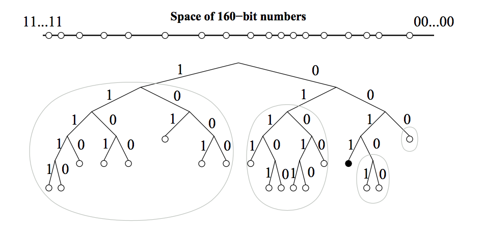
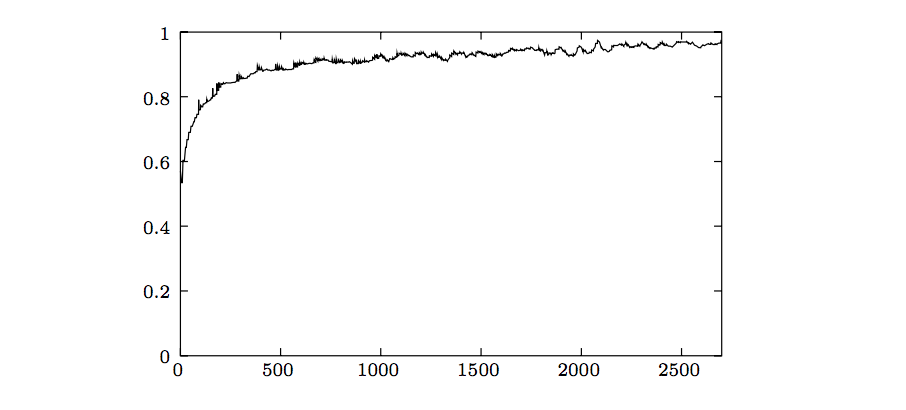

本文是论文 Kademlia: A Peer-to-Peer Information System Based on the XOR Metric 的翻译。
Kademlia：一种基于 XOR 距离的 P2P 信息系统
作者：Petar Maymounkov 以及 David Mazières
Abstract（摘要）
我们描述了一种在容易出错的环境下仍具有可证明的容错性和性能的 P2P 分布式散列表。我们的系统使用了一种基于 XOR 距离的新型拓扑来路由查询与定位节点的需求，该拓扑简化了算法及算法的证明。该拓扑有这样一个特点：每次信息交换都传递或者加强了（节点间）有效联系。系统根据这种联系来发送并行异步查询消息，从而做到容忍节点故障同时不对用户造成超时。
Introduction（介绍）
本论文描述 Kademlia —— 一个 P2P 分布式散列表（DHT）。Kademlia 有许多之前的 DHT 无法同时提供的理性功能。它最大限度地减少了节点必须发送的用于互相了解的配置消息数量。查找 Key 时附带自动传播配置信息。节点具有足够的认知与灵活性来通过低延迟路径路由查询。Kademlia 使用并行异步查询来避免来自失败节点的超时延迟。节点记录其他节点的存在以阻挡某些基本的拒绝服务攻击。最后，只要对运行时间进行简单的假设就可以对 Kademlia 的几个重要特性进行正式证明。
Kademlia 采用了许多 DHT 使用的基本方法。密钥使用不透明的 160 位空间，比如 SHA-1 散列。参与的计算机在 160 位密钥空间中都有一个节点 ID。key-value 键值对存储在那些 ID “接近” key 的节点上。最终，一个基于节点 ID 的路由算法使得任何节点可以通过给出的目标 key 有效地定位 key 附近的节点。
Kademlia 的众多优点得益于它创新地使用 XOR 来度量节点间的距离。XOR 是对称的，允许 Kademlia 接收来自那些拥有完全相同的路由表信息的节点的查询请求。像是 Chord 这样没有这种特性的系统就无法从查询请求中获取有用的路由信息。甚者，不对称会导致严格的路由表。在 Chord 中，每个节点必须存储？？？？？？？
为了定位接近特定 ID 的节点，Kademlia 自始至终仅使用一个路由算法。相反，其他系统使用一种算法来接近目标 ID，使用另一种算法来完成最后几跳。在现有的系统中，Kademlia 最像 Pastry 的第一阶段，虽然作者没有用这种方式描述，但是通过 Kademlia 的 XOR 距离发现目标 ID 的节点数可以减少一半。在 Pastry 的第二阶段，它将距离度量切换为 ID 间的数字差异。它还在复制中使用第二个数字差异度量。遗憾的是，第二个度量标准中相距较近的节点在第一个度量标准中则可能相差很远，以致在特定节点 ID 值处产生了不连续性，从而降低了性能，并使得对最坏情况行为的正式分析变得复杂。
System Description（系统描述）
与其他 DHT 相同类似，Kademlia 给节点分配一个 160 位的透明 ID，并提供一个查询算法用以定位更加接近指定节点的节点，以对数级别收敛查询到目标节点。
Kademlia 高效地将节点作为一个二叉树的叶子节点，每个节点的位置取决于其 ID 的最短唯一前缀。图一展示了唯一前缀为 0011 的节点在树中的位置。对于任一给定的节点，我们将二叉树分为一系列连续的不包含该节点的子树。最高的子树由不包含该节点的整个二叉树的一半组成。接下来的子树由不包含该节点的剩余二叉树的一般组成。在图示中，节点 0011 的所有子树被圈出，按照高度由高到低排序，前缀分别是 0, 01, 000 以及 0010。

Kademlia 协议确保每个节点都知晓其每个子树中的至少一个节点。有了这个保证，任一节点都可以通过 ID 定位到另外的节点。图二展示了节点 0011 通过不断在子树中查询最佳它所知晓的最佳节点的方式最终找到目标节点 1110 的过程。

本节的剩余部分补充了查找算法的具体细节。我们首先定义一个精确的概念来描述节点间的距离，让我们指出距离某个 key 最近的 k 个节点提供了可能。然后给出一个查询协议，即使没有节点与给定的 key 拥有相同的唯一前缀或者给定节点的一些子树是空的，这个协议仍然是可工作的。
XOR Metric（XOR 度量）
每个 Kademlia 节点都有一个 160 比特的节点 ID。节点 ID 目前只是随机的 160 位标识符，尽管它们同样可以像在 Chord 中那样构造。节点发送的每条消息都包含其节点ID，允许接收方在必要时记录发送方的存在。
键同样是 160 位标识符。为了给特定的节点分配 key-value 键值对，Kademlia 依赖两个标识符之间的距离的度量。给出两个 160 位的标识符 $x$ 和 $y$，Kademlia 将 $x$ 与 $y$ 的距离定义为 $x$ 与 $y$ 按位异或后的整数值，即 $d(x, y) = x \oplus y$。
我们首先注意到 XOR 运算是有效的，尽管属于非欧几里德距离。异或运算有以下性质：
- $$d(x, x) = 0$$
- $$d(x, y)>0, \text{ if } x \neq y$$
- $$\forall x, y:d(x, y)=d(y, x)$$
- $$d(x,y)+d(y,z) \geq d(x,z)$$
- $$d(x,y) \oplus d(y,z) = d(x,z)$$
- $$\forall a \geq 0, b \geq 0: a+b \geq a \oplus b$$
接下来我们注意到异或度量刻画了基于二叉树的系统草图中隐含的距离概念。在 160 位 ID 完全填充的二叉树中，两个 ID 间距离大小是包含它们的最小子树的高度。当树未完全填满时，与 ID $x$ 最接近的节点是节点 ID 与 $x$ 共享最长公共前缀的节点。如果树中有空分支，则可能有多个叶子节点具有最长的公共前缀，在这种情况下，与 $x$ 最接近的叶子将变为离通过翻转 $x$ 中对应于树的空分支中的位得到的 $\widetilde{x}$ 最近的叶子。
类似于 Chord 算法的顺时针圆周度量，XOR 也是单向的。对于任意给定的点 $x$ 以及 $∆ > 0$，仅存在一个点 $y$ 使得 $d(x, y) = ∆$。单向性保证了对于相同的 key，无论从哪个原点开始查询，都会沿着相同的路径进行收敛。这样，沿着查询路径缓存 key-value 键值对就能减轻存放热门 key 值节点的压力。类似于 Pastry 而不同于 Chord， XOR 拓扑是对称的。
Node State（节点状态）
Kademlia 节点存储了其他节点联系人的信息以路由查询消息。对于每个 $0 \leq i < 160$，每个节点构建一个（IP 地址，UDP 端口，节点 ID）的三元组列表用来存储与该节点相距 $[2^i$, $2^{i+1})$ 的节点。我们称之为 $K$ 桶。每个 $K$ 桶内节点根据节点最后可见时间进行排序，最早可见的放置在开头，最近可见的放置在末尾。对于较小的 $i$ 值，$K$ 桶通常是空的（因为不存在合适的节点）。对于较大的 $i$ 值，列表最大容量为 $k$，$k$ 是一个系统范围内的复制参数。仅当任意给定的 $k$ 个节点不会在一个小时内同时失效时，$k$ 值才有效，例如 $k = 20$。
当一个 Kademlia 节点收到任一来自其他节点的请求或者回复消息，它会根据发送者的节点 ID 更新 $K$ 桶。规则如下：
- 如果发送节点已经存在接收方的 $K$ 桶中：
- 接收方将发送节点移动到相应 $K$ 桶的尾部；
- 如果发送节点并未存在接收方的 $K$ 桶中：
- 如果 $K$ 桶中节点数量少于 $k$ 个，则直接将发送节点插入至 $K$ 桶尾部；
- 如果 $K$ 桶已满：
- 如果最早可见的节点不能 ping 通，则移除该节点，然后将发送节点插入至 $K$ 桶尾部；
- 如果最早可见的节点可以 ping 通，则将该节点移动到尾部，然后丢弃发送节点；
$K$ 桶高效地实现了 LRU 算法，只是活动的节点永远不会从列表中移除。这种对与旧联系人的偏好来自于我们的对于 Saroiu 等人从 Gnutella 网络收集的追踪数据的分析。图 3 展示了 Gnutella 节点随着当前时间的推移，额外在线一个小时的可能性。一个节点在线时间越长，它就越可能继续额外在线一个小时。通过保持最老的在线节点，$K$ 桶最大化了列表中节点在线的可能性。

$K$ 桶采用这样的更新策略的另一个优点在于可以抵挡特定的 DoS 攻击。攻击者不能使用新的节点泛洪系统来刷新节点的路由状态。只有当旧的节点离开了系统，Kademlia 才会插入新的节点。
Kademlia protocol（Kademlia 协议）
Kademlia 协议由四个 RPC 调用组成：PING, STORE, FIND_NODE, FIND_VALUE。
- PING 用于探测一个节点是否在线。
- STORE 用于通知一个节点存储一个 key-value 对以便之后获取。
- FIND_NODE 使用一个 160 比特的 ID 作为参数。调用对象返回一个其知晓的距离目标 ID 最近的 $k$ 个节点信息 <IP 地址，UDP 端口，节点 ID> 三元组。这 $k$ 个三元组可能来自单个 $K$ 桶，也可能因为距离最近的 $K$ 桶未满而取自多个 $K$ 桶。在任何一种情况下，RPC 调用接收者必须返回 $k$ 个节点，除非该节点知晓节点总数小于 $k$ 个。
- FIND_VALUE 调用和 FIND_NODE 一样，不过当调用的接收者存有请求者所请求的键的时候，它将返回相应键的值。
在所有的 RPC 中，接收者必须返回一个 160 比特的随机 RPC ID，以防止地址伪造（？）。可以将 PING 消息附加在 RPC 消息的回复中以确定发送者的网络地址。
临近 ID 节点查找
Kademlia 节点需要实现的最重要的过程就是根据一个节点 ID 找到与它最近的 $k$ 个节点。我们称这个过程为 节点查找，Kademlia 使用递归完成这个工作。由查找需求的起始节点先从离目标节点 ID 最近的非空 $K$ 桶中取出 $α$ 个节点（如果 $K$ 桶中节点不足 $α$ 个，则从其他 $K$ 桶中取满 $α$ 个）。起始接地并行向这 $α$ 个节点发送 FIND_NODE RPC 调用。$α$ 是一个系统级参数，例如 3。
在递归调用阶段，初始节点根据 $α$ 个节点返回的节点列表再次发送 FIND_NODE 请求（递归调用在所有 $α$ 个节点完成返回前就可以开始）。起始节点从其他节点返回的大小为 $k$ 的节点列表中选出 $α$ 个之前没有查询过的节点，向它们发送 FIND_NODE RPC 调用。失败的节点将不再会纳入考虑范围。如果有一轮 FIND_NODE 调用中返回的所有节点都不比之前知晓的 $k$ 个节点更加接近，则当初始节点完成对最近的这个 $k$ 个节点的查询并得到响应之后，查询结束。当 $a=1$，查询算法在信息开销和故障节点的检查延迟上与 Chord 类似。但是 Kademlia 可以灵活地从 $k$ 个节点中选择任一一个发送请求以降低查询延迟。
存储键值对与重新发布时间
上述查询过程实现了大部分的操作。为了存储一个 key-value 对，起始节点通过上述操作定位到 $k$ 个离 key 最近的节点，并向它们发送 STORE 调用。另外，每个节点会在需要的情况下重新发布 key-value 以使 key-value 持续存在。在 Kademlia 当前的应用中（文件分享），key-value 的原始发布者需要每个 24 小时重新进行发送。否则，key-value 将在发布 24 小时后失效，以限制系统中不可用的索引信息。对于其他的应用，比如数字证书或者用于值映射的加密哈希，更长的过期时间也许会更合适。
查询键值对与过期时间
为了找到一个 key-value 对，节点发起一个节点查找以找到 ID 与 key 最接近的 $k$ 个节点。值查询使用的是 FIND_VALUE 调用而不是 FIND_NODE 调用。而且，如果任何一个节点返回了值，则这个过程立即结束。出于缓存的目的，一旦查找成功，发起节点将会将 key-value 存储至其知晓的相对 key 最近的，但是在查找过程中并没有返回值的节点。
由于拓扑是单向的，随后对于相同 key 的查找很可能在查询到最近的节点之前就命中存储在非最近节点中缓存。在某个 key 活跃度非常高的情况下，系统可能会将其存储在很多节点。为了避免这种过度存储，我们为 key-value 设置了过期时间，这个时间与节点 ID 相对于 key 的距离成指数反比。虽然简单的 LRU 策略会产生类似的生命周期分布，但是没有合适的方法去选择cache的大小，因为节点对于系统将要储存多少值没有先验知识。
$K$ 桶更新与加入网络
$K$ 桶会根据经过节点的请求而保持更新。为了解决因为某个特殊的 ID 段长时间没有查询的特殊情况，节点会刷新那些在过去一小时内没有过查询请求的 $K$ 桶。刷新就是随机选取一个处在当前 $K$ 桶范围的 ID，然后对其进行节点查询。
为了加入网络，一个节点 $u$ 必须要与一个已存在在网络中的节点 w 有联系。$u$ 将 w 插入到合适的 $K$ 桶中，随后 $u$ 对自己的 nodeID 进行一次节点查询，最后，$u$ 会联系到离它邻居更远的节点，然后更新相应的 $K$ 桶。在刷新过程中，$u$ 填充了自己的 $K$ 桶同时也将自己插入到其他节点的 $K$ 桶中。
Routing Table（路由表）
Kademlia 的基础路由表结构非常直观，但是需要对高度不平衡的树进行一些细节处理。路由表是一棵叶子节点为 $K$ 桶的二叉树。每个 $K$ 桶包含了一些具有公共前缀的 ID。$K$ 桶公共前缀就是其在二叉树中所处的位置。可见，每个 $K$ 桶覆盖了一部分 ID 空间，所有的 $K$ 桶集合无重叠地覆盖了整个 160 比特 ID 空间。
路由二叉树中的节点是按需动态分配的。图 4 表示了这一个过程。初始状态下，节点 $u$ 的路由树只有一个节点，一个 $K$ 桶覆盖了整个 ID 空间。当 $u$ 得到了一个新的联系人时，它将根据与新的联系人的距离，尝试将其插入到合适的 $K$ 桶中。插入的规则如下：
- 如果 $K$ 桶未满，新的联系人就会被直接插入；
- 如果 $K$ 桶满了：
- 如果 $K$ 桶的范围包括了 $u$ 自身的 ID，则 $K$ 桶将会一分为二，原 $K$ 桶中的 ID 重新分配到新的 $K$ 桶中，然后再尝试插入；
- 如果 $K$ 桶的范围不包括 $u$ 自身的 ID，新的联系人将直接被丢弃；（3）
在这样高度不平衡的二叉树中会出现一个问题，导致这种情况下并不会按照规则 3 进行插入。假设一个系统中，$u$ 是唯一一个 ID 以 000 开头的节点，同时有超过 $k$ 个 ID 以 001 开头的节点 $v_1,v_2…v_k…v_n$。对于每个节点 $v$ 的路由树，$u$ 都将会被插入到一个空 $K$ 桶中。但是由于按照规则 3， $u$ 的桶更新只会通知到 $u$ 的路由树所记录的所有 $v$ 中的 $k$ 个。为了避免剩余的 $v$ 无法得到 $u$ 的桶更新信息，Kademlia 节点通过拆分以保存了超过 $k$ 个的所有有效的节点，即使不是因为 $K$ 桶中包括了自身的 ID。图 5 展示了这种额外的拆分。当 $u$ 刷新了桶，所有前缀为 001 的节点都会知晓。


Efficient Key Re-publishing（Key 的高效重发布）
为了保证 key-value 对的持久存在，节点必须周期性重发布 key。否则，两种情况下可能导致对有效 key 的查询失败。
- 一些获得 key-value 对的节点离开了网络
- 新的相比原始被发布过 key-value 对的节点 ID 更近的节点加入了网络
在这两种情况下，拥有这个 key-value 对的节点需要将其重新发布到离 key 最近的 $k$ 个节点。
为了弥补节点离开网络的情况，节点每隔一个小时重新发布 key-value 对，一个直接的实现就是将会产生很多消息——每个存储这个 key-value 对的节点（至多 $k$ 个）间隔一小时会发起一次查询，然后向其他 $k-1$ 个节点发起 STORE 请求。这个重新发布操作可以大大简化。首先，当一个节点收到对某个 key-value 对的 STORE 调用，它假设这个 RPC 调用同样被发送给了另外 $k-1$ 个节点，这个节点在下一个小时不会再重新发布此 key-value 对。这保证了知道复制间隔不是完全同步的，每隔小时内只有一个节点会重新发布 key-value 对。
第二个优化在于在重新发布 key 之前避免进行节点查询。像上一节所说的，为了处理不平衡树，在必要的时候节点将会拆分 $K$ 桶来确保它对至少 $k$ 个节点的周围子树充分了解。如果节点在重新发布 key-value 之前更新了该 $k$ 节点子树的所有 $K$ 桶，它将自动获知距离给定 key 最近的 $k$ 个节点。对于这些 $K$ 桶的更新代价可以分摊给许多 key 的重新发布（平均而言，这样就降低了单个 key 重新发布时的代价）。
要搞清楚为什么在 $u$ 更新规模大于等于 $k$ 的子树的所有 $K$ 桶后不再需要节点查询了，需要分为两种情况。如果要被充发布的 key 在该子树的 ID 范围内，那么因为子树的规模至少为 $k$ 而且 $u$ 具有该子树的全部知识，显然 $u$ 肯定知道距离 key 的最近 $k$ 个节点。如果要被充发布的 key 在该子树的 ID 范围外，因为 $u$ 是 $k$ 个距离 key 最近的节点之一（否则 $u$ 不会存储关于该 key 的信息），显然所有距离该 key 比距离子树更近一些的 $K$ 桶中的元素都少于 $k$。因此，$u$ 将会知晓所有这些 $K$ 桶中的所有节点，再加上关于子树的知识，就可以得到距离该 key 最近的 $k$ 个节点。
当一个新节点加入网络，对于每个 key-vaule 对来说，如果该节点为其 $k$ 个最近节点之一，那么必须对其进行存储。网路中原有的节点同样可以通过其边缘子树的完整知识，知道哪些 key-value 对需要存储在该新增节点上。每个了解到新节点的节点都会发起 STORE 调用把相关的 key-value 对传送到新节点之上。为了避免重复的 STORE 调用 ，只有那些自身 ID 比其他节点 ID 更接近 key 的节点才会进行 key-value 对的传送。
Sketch of Proof（待译）
待翻译
Implementation Notes（待译）
待翻译
Summary（总结）
由于采用基于 XOR 度量的拓扑，Kademlia 是第一个结合了可证明的一致性，性能，低时延路由以及单向对称拓扑的点对点系统。Kademlia 还引入了并发参数 $α$，它允许人们在带宽中交换常数因子，以实现异步最低延迟路由选择和无延迟错误恢复。最后，Kademlia 是第一个利用节点故障与正常运行时间成反比关系这一事实的点对点系统。